Unit tests
experience feedback from the Compute Engine team
FluentIterable
(added in Guava 12)Its streams and functional programming for the poor
say bye bye to loops, nested loops, mutable variables, ...
Old style
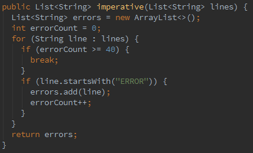Extract the 40 first lines starting with ERROR from the specified list
Functional style
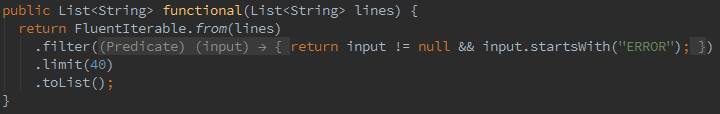- code is much shorter
- no more mutable variable
Imperative VS functional
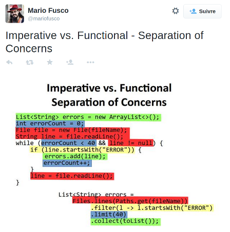note: we are close to Java 8 stream syntax
a real change
even though it's nothing but a fluent style wrapper
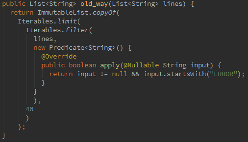
Keep it readable
IDEA lambda style display
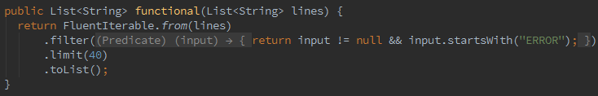
the real code
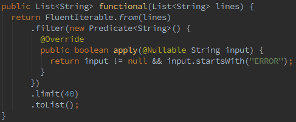
Keep it readable
use a method
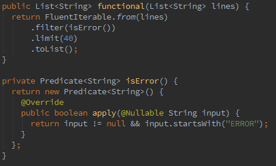
Keep it readable
use indent, otherwise...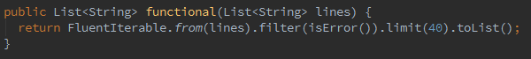
Keep it readable
use static import of FluentIterable.from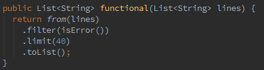
let's go practical
Legacy code 1
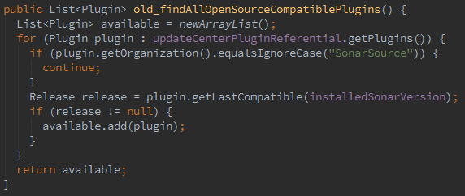Find all opensource plugins which are compatible with the current version of SQ
Functional style
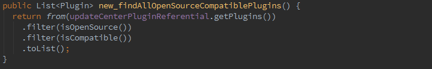the whole stuff
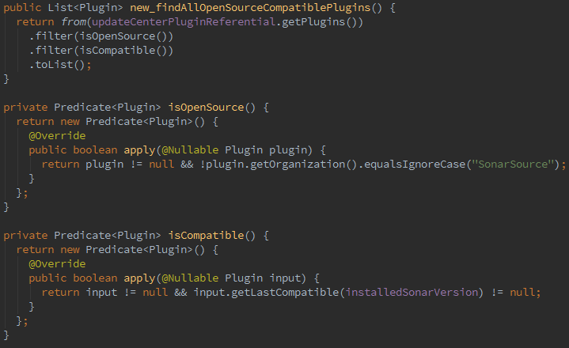handling Null
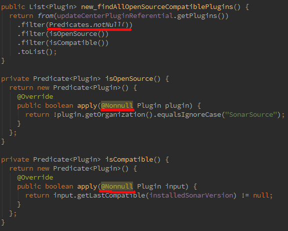Nonnull Predicates
- complies with Javadoc 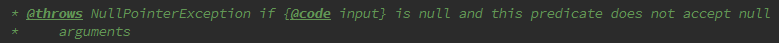
- override @Nullable with @Nonnull
- complies with SQ
- but not with IDEA (who cares?)
- Fail early in predicate
- enforces explicit Null handling in stream
- or avoid numerous useless null checks
save useless instance creation

singleton enum
when apply code is static 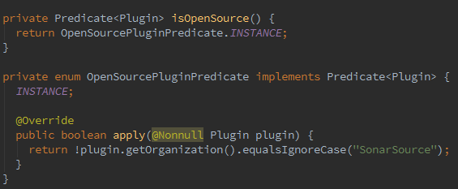
save useless instance creation
predicate as property
when apply code depends only on a instance properties 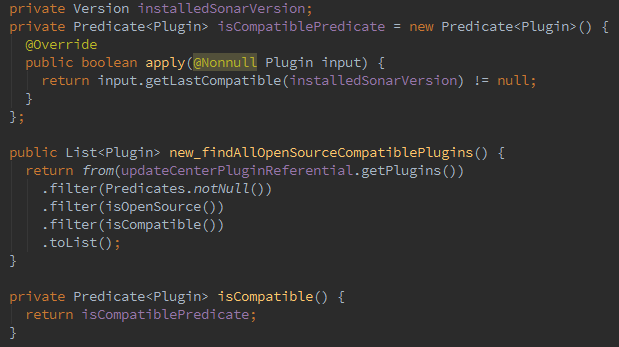
final code

Legacy code 2

create an ordered collection of the developers of the opensource plugins in the specified collection which name starts with an a (case insensitive)
Functional style
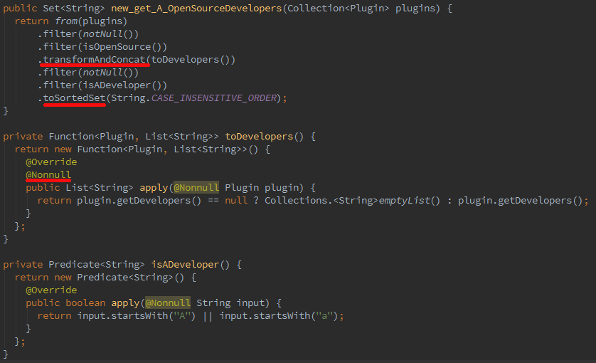transform And Concat
Also known as flatMap (map and flatten)
PluginA ---- PluginB ---- PluginC ---- PluginD
| | | |
| | | |
DevA() ---- DevB() ---- DevC() ---- DevC()
\ \ / /
\ \ / /
\ \ / /
--------------------\ /---------------------
|
DevAll[]
Know your FluentIterable
| process input | immutable output | Optional output |
|---|---|---|
|
filter
transform, transformAndConcat cycle, append |
toList, toSet, toArray
toSortedList, toSortedSet toMap, index, uniqueIndex |
first, last
firstMatch, anyMatch |
Under the hood
What you should known to avoid bad usage of FluentIterable
Lazy evaluation
all filter/map/flatmap operations are lazy evaluated
- empty iterable at any point means next operations are not evaluated
- iterate twice means do all operations twice
- same goes with exist, find, any, size, get, ...
practices
- don't return FluentIterable directly in non private functions
- be careful when storing a FluentIterable in variable
- but you can reuse a FluentIterable to create variations
Immutability
Ouput of toList, toSet, toMap are immutable objects
- it's good for your public functions
-
for mutable collections, use Guava's methods
-
do
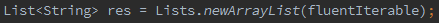 -
do not
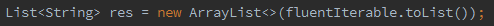
-
do
lots of objects
Guava create lots of (short-lived) objects
So, try and don't add to the stack with your objects
Organising functions/predicates
-
use factory-style classes
-
static methods are static import friendly
=> short and good readibility - don't expose inner singleton enums or classes
-
static methods are static import friendly
PluginPredicates

Guidelines
- group per domain class
-
Name is plural
- eg. "PluginPredicates", "PluginFunctions"
-
group factory classes per domain into a package
- eg. "updatecenter.function", "updatecenter.predicate"
Optional
Get rid of null...
... as a returned value
(added in Guava 10 so we should already use it!)
Optional as a return type
-
improves meaning of method signature
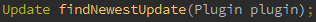

- less error prone
- no more @CheckForNull or @Nullable or javadoc or whatever
Optional as a parameter
don't do it in public methods
Rubustness principle: Be conservative in what you send, be liberal in what you accept
Optional as a parameter
- keep using @Nullables
- avoids polluting method signature
- and add extra constraint on method caller
- use Optional.fromNullable internally
Optional as a property
don't do it either
- The extra storage cost is just not worth it
- keep using (or do use) @CheckForNull/@Nullable
- Use Optional.fromNullable in getters
No more null checks
forget testing null, use Optional.isPresent
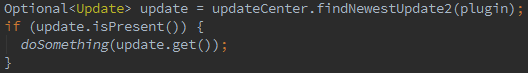never use Optional.get without Option.isPresent first
The golden or method
elegant default value
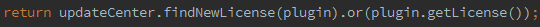
use Optional.orNull if null is your default value
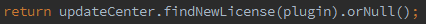
Or even better
fluent method calls
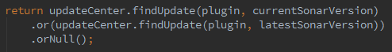
or throwing exceptions
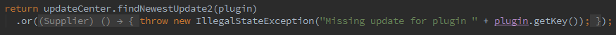